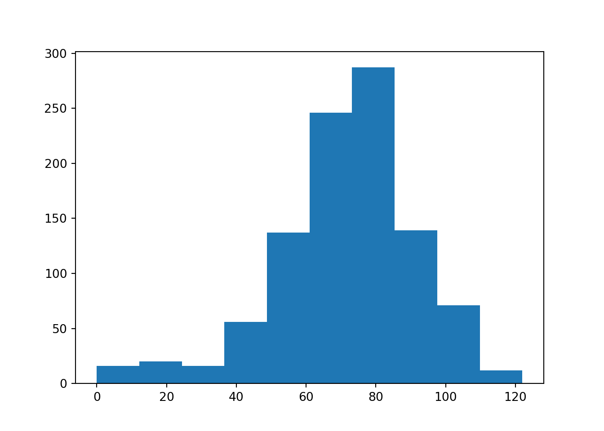
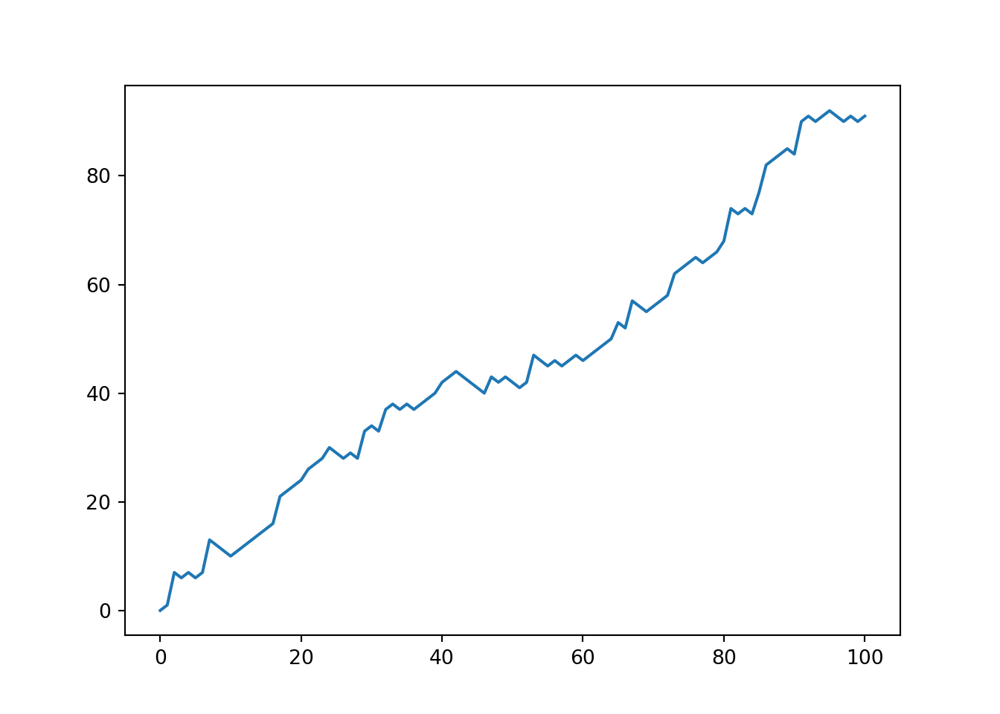
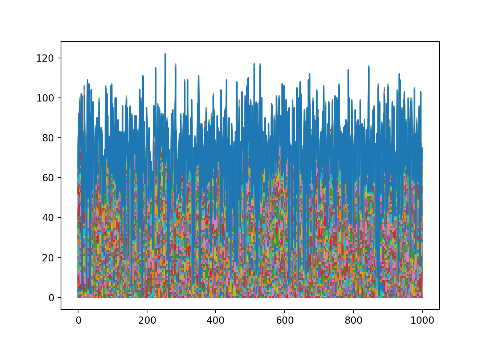
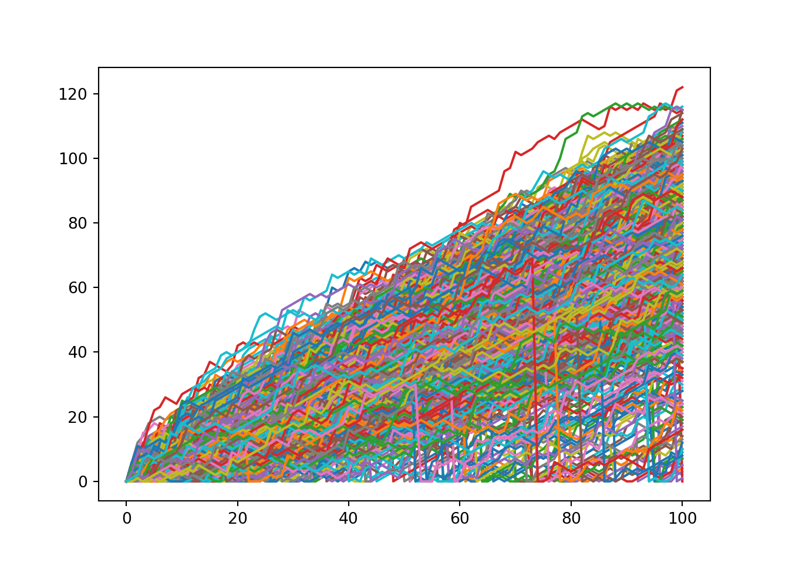

Chapter 12 Case Study: Hacker Statistics
- 現在我們想來進行一個遊戲：擲骰子爬帝國大廈，遊戲規則如下：
- 如果擲出1,2點，那要往下走一層樓
- 如果擲出3,4,5點，那可以往上走一層樓
- 如果擲出6點，那可以再擲一次骰子，骰到幾點就往上爬幾樓
- 最低只能往下爬到0樓，超過都不算了
- 每爬完一次樓層，都有0.1%的機會，會失足摔回第0層
- 如果擲出1,2點，那要往下走一層樓
- 現在準備擲100次骰子，請問可以爬到60層樓的機率為何？
- 要回答這個問題，可以用：
- 解析解：就直接照理論推導去計算
- 模擬解：直接做隨機實驗看結果(aka: Hack Statistics)
- 解析解：就直接照理論推導去計算
- 這一個章節，就打算用模擬解，來回答這個題目
12.1 產出random number
- 我們會用numpy中的一個sub-package，叫
random，來進行亂數產生
- 所以，如果numpy被你縮寫成
np，那接下來的function都會寫成np.random.xxx()，意思就是用到random這個sub-package
- 常見的function整理如下：
np.random.seed(): 設random seed
np.random.rand(): 產出0~1的隨機亂數，看起來就是連續型U(0,1)
np.random.randint(start, stop): 就是離散型U(start, stop-1)。所以如果以擲銅板為例，就會寫np.random.randint(0,2)，那亂數就是0 or 1; 以擲骰子為例，就會是np.random.randint(1,7)，亂數就是1,2,3,4,5,6。
- 來練習一下
12.2 擲骰子1次的實驗
- 現在，假設我們在50樓，然後要做一次擲骰子遊戲，我想看，我直到多少，以及，擲完後，我會變成在幾樓
import numpy as np
np.random.seed(12)
# Starting step
step = 0
# Roll the dice
dice = np.random.randint(1,7)
# Finish the control construct
if dice <= 2 :
step = step - 1
elif dice > 2 and dice <6 :
step = step + 1
else :
step = step + np.random.randint(1,7)
# Print out dice and step
print(dice)
#> 4
print(step)
#> 1- 我們可以看到，擲到4點，要往上爬一層，所以結果是從0 floor爬到1 floor (step現在是1)
12.3 擲骰子100次的實驗
- 那如果我現在想玩十次，那我會想記錄這10次的骰子結果，以及每次執行完我會爬到哪一層。那就可以善用list這個資料結構，和.append這個method
np.random.seed(17)
random_walk = [0] # 一開始在0樓，他是list的data structure
dice_history = [0]
for i in range(100): #執行10次
dice = np.random.randint(1, 7)
dice_history.append(dice)
step = random_walk[-1] #現在所屬樓層，是random walk這個list的最後一個element
if dice <= 2:
step = step-1
elif dice <= 5:
step = step+1
else:
step = step + np.random.randint(1,7)
random_walk.append(step)
print(random_walk)
#> [0, -1, -2, -3, 2, 3, 4, 3, 2, 1, 0, 1, 2, 3, 4, 5, 4, 3, 2, 8, 7, 6, 12, 13, 14, 13, 14, 15, 16, 17, 18, 17, 18, 17, 16, 17, 18, 19, 20, 21, 22, 23, 22, 21, 22, 23, 22, 21, 20, 19, 18, 19, 20, 23, 24, 25, 29, 30, 31, 32, 33, 38, 37, 36, 37, 38, 37, 38, 39, 43, 44, 43, 49, 51, 52, 53, 52, 53, 54, 55, 54, 55, 54, 53, 54, 53, 54, 53, 54, 55, 56, 57, 58, 57, 58, 64, 65, 66, 65, 64, 67]
print(dice_history)
#> [0, 2, 2, 1, 6, 5, 5, 2, 2, 2, 1, 3, 3, 4, 4, 4, 2, 2, 2, 6, 2, 1, 6, 3, 5, 2, 6, 4, 3, 4, 3, 2, 5, 2, 1, 4, 4, 3, 4, 4, 3, 4, 1, 2, 3, 3, 2, 1, 2, 1, 1, 5, 5, 6, 5, 5, 6, 4, 4, 4, 6, 6, 2, 2, 4, 5, 2, 4, 3, 6, 4, 2, 6, 6, 4, 4, 1, 4, 3, 3, 1, 3, 2, 1, 5, 1, 3, 2, 5, 3, 5, 4, 3, 1, 3, 6, 4, 4, 2, 1, 6]- 看起來應該是做對了，因為一開始擲到2，要往下一層樓，從0樓往下一層樓，就會是-1樓，所以沒做錯
- 但是，剛剛有個規定是說，如果樓層往下走，走到最低只能是0，不能是負的
- 所以，接下來我們要用
max()這個function來幫我們把關，例如：step = max(step-1, 0)
12.4 修正樓層不能<0
np.random.seed(17)
random_walk = [0] # 一開始在0樓，他是list的data structure
dice_history = [0]
for i in range(100): #執行100次
dice = np.random.randint(1, 7)
dice_history.append(dice)
step = random_walk[-1] #現在所屬樓層，是random walk這個list的最後一個element
if dice <= 2:
# 確保往下走，最低只會走到0
step = max(step-1, 0)
elif dice <= 5:
step = step+1
else:
step = step + np.random.randint(1,7)
random_walk.append(step)
print(random_walk)
#> [0, 0, 0, 0, 5, 6, 7, 6, 5, 4, 3, 4, 5, 6, 7, 8, 7, 6, 5, 11, 10, 9, 15, 16, 17, 16, 17, 18, 19, 20, 21, 20, 21, 20, 19, 20, 21, 22, 23, 24, 25, 26, 25, 24, 25, 26, 25, 24, 23, 22, 21, 22, 23, 26, 27, 28, 32, 33, 34, 35, 36, 41, 40, 39, 40, 41, 40, 41, 42, 46, 47, 46, 52, 54, 55, 56, 55, 56, 57, 58, 57, 58, 57, 56, 57, 56, 57, 56, 57, 58, 59, 60, 61, 60, 61, 67, 68, 69, 68, 67, 70]
print(dice_history)
#> [0, 2, 2, 1, 6, 5, 5, 2, 2, 2, 1, 3, 3, 4, 4, 4, 2, 2, 2, 6, 2, 1, 6, 3, 5, 2, 6, 4, 3, 4, 3, 2, 5, 2, 1, 4, 4, 3, 4, 4, 3, 4, 1, 2, 3, 3, 2, 1, 2, 1, 1, 5, 5, 6, 5, 5, 6, 4, 4, 4, 6, 6, 2, 2, 4, 5, 2, 4, 3, 6, 4, 2, 6, 6, 4, 4, 1, 4, 3, 3, 1, 3, 2, 1, 5, 1, 3, 2, 5, 3, 5, 4, 3, 1, 3, 6, 4, 4, 2, 1, 6]- good，好多了，現在沒有走到負數樓層了
- 但還有一個規則沒用到，就是每走完一層樓，他有0.1%的機會，會回到原點(step重設為0)
- 那很簡單，我就用
np.random.rand() < 0.001當條件就好，如果條件滿足，那就把step重設為0
12.5 修正有0.1%的機會，會回到原點
np.random.seed(17)
random_walk = [0] # 一開始在0樓，他是list的data structure
dice_history = [0]
for i in range(100): #執行100次
dice = np.random.randint(1, 7)
dice_history.append(dice)
step = random_walk[-1] #現在所屬樓層，是random walk這個list的最後一個element
if dice <= 2:
# 確保往下走，最低只會走到0
step = max(step-1, 0)
elif dice <= 5:
step = step+1
else:
step = step + np.random.randint(1,7)
if np.random.rand() < 0.001:
step = 0
random_walk.append(step)
print(random_walk)
#> [0, 0, 0, 1, 2, 1, 2, 3, 2, 1, 3, 6, 5, 6, 7, 6, 7, 8, 7, 8, 7, 6, 9, 13, 14, 13, 12, 13, 14, 15, 21, 20, 21, 20, 21, 20, 21, 20, 21, 22, 28, 27, 30, 31, 32, 33, 34, 33, 32, 36, 35, 36, 35, 41, 42, 41, 42, 41, 40, 41, 40, 39, 40, 39, 40, 41, 43, 47, 48, 49, 53, 52, 53, 52, 53, 54, 53, 52, 53, 54, 55, 54, 53, 52, 56, 57, 58, 59, 60, 59, 60, 61, 60, 61, 60, 61, 63, 64, 63, 64, 65]12.6 做1000個run，每個run都做100次擲骰子的實驗
- 現在，我想先新增一個空list，然後每run完一次擲骰子100次的遊戲後，我就把這次的結果list塞進來，那我做完1000個run，就會得到一個list，此list裡面有1000個element，每個element都是100*1的list!!
np.random.seed(17)
all_walks = []
for run in range(1000):
# 之前的code塞進來
random_walk = [0]
for i in range(100): #執行100次
dice = np.random.randint(1, 7)
step = random_walk[-1]
if dice <= 2:
# 確保往下走，最低只會走到0
step = max(step-1, 0)
elif dice <= 5:
step = step+1
else:
step = step + np.random.randint(1,7)
if np.random.rand() < 0.001:
step = 0
random_walk.append(step)
all_walks.append(random_walk)
# print(all_walks)12.7 擷取每個run的最後一筆資訊
- 現在
all_walks[]這個list，是個1000*100的list，而我們要取的是每個sub-list中的最後一個。所以，可以這樣做：
end_points = []
for i in range(1000):
end = all_walks[i][-1]
end_points.append(end)
print(end_points[:10])
#> [65, 91, 62, 73, 98, 85, 75, 83, 77, 102]- 這邊，也可以用另一個小技巧，先把list轉成np.array，就可以直接抓出一整排結果
12.8 計算可以爬到60層樓以上的機率
- 既然已經有1000筆的模擬結果，那我們就看這些結果>60的比例有多高就好：
- 實驗結果： 有77%的機率，可以爬到60樓以上！！
12.9 Appendix
- 接下來，我們可以用剛剛的data，做一點視覺化的練習
12.9.1 畫一下endpoint的distribution
import matplotlib.pyplot as plt
plt.hist(np_end_points)
#> (array([ 16., 20., 16., 56., 137., 246., 287., 139., 71., 12.]), array([ 0. , 12.2, 24.4, 36.6, 48.8, 61. , 73.2, 85.4, 97.6,
#> 109.8, 122. ]), <BarContainer object of 10 artists>)
plt.show()
12.9.2 第一個run，我的爬樓梯過程長怎樣？

12.9.3 Visualize所有run的爬樓梯過程
plt.plot(np_aw)
#> [<matplotlib.lines.Line2D object at 0x13ea352b0>, <matplotlib.lines.Line2D object at 0x13ea327f0>, <matplotlib.lines.Line2D object at 0x13ea32970>, <matplotlib.lines.Line2D object at 0x13ea32ee0>, <matplotlib.lines.Line2D object at 0x13ea32e80>, <matplotlib.lines.Line2D object at 0x13ea327c0>, <matplotlib.lines.Line2D object at 0x13ea325e0>, <matplotlib.lines.Line2D object at 0x13ea32bb0>, <matplotlib.lines.Line2D object at 0x13ea32b20>, <matplotlib.lines.Line2D object at 0x13ea32220>, <matplotlib.lines.Line2D object at 0x13ea599a0>, <matplotlib.lines.Line2D object at 0x13ea47a00>, <matplotlib.lines.Line2D object at 0x13b646d00>, <matplotlib.lines.Line2D object at 0x13b646880>, <matplotlib.lines.Line2D object at 0x13ca35a30>, <matplotlib.lines.Line2D object at 0x13ca35d90>, <matplotlib.lines.Line2D object at 0x13ca35400>, <matplotlib.lines.Line2D object at 0x13b6762b0>, <matplotlib.lines.Line2D object at 0x13b676610>, <matplotlib.lines.Line2D object at 0x13ea2f040>, <matplotlib.lines.Line2D object at 0x13ea2af70>, <matplotlib.lines.Line2D object at 0x13ea2aee0>, <matplotlib.lines.Line2D object at 0x13ea2ad30>, <matplotlib.lines.Line2D object at 0x13ea2abe0>, <matplotlib.lines.Line2D object at 0x13ea2a8e0>, <matplotlib.lines.Line2D object at 0x13ea2a790>, <matplotlib.lines.Line2D object at 0x13ea2a2e0>, <matplotlib.lines.Line2D object at 0x13ea2a3a0>, <matplotlib.lines.Line2D object at 0x13ea23cd0>, <matplotlib.lines.Line2D object at 0x13ea23df0>, <matplotlib.lines.Line2D object at 0x13ea23e20>, <matplotlib.lines.Line2D object at 0x13ea238b0>, <matplotlib.lines.Line2D object at 0x13ea236a0>, <matplotlib.lines.Line2D object at 0x13c98c040>, <matplotlib.lines.Line2D object at 0x13e967790>, <matplotlib.lines.Line2D object at 0x13e9676d0>, <matplotlib.lines.Line2D object at 0x13e967640>, <matplotlib.lines.Line2D object at 0x13e9674c0>, <matplotlib.lines.Line2D object at 0x13b65a4f0>, <matplotlib.lines.Line2D object at 0x13b65aa30>, <matplotlib.lines.Line2D object at 0x13b65a2e0>, <matplotlib.lines.Line2D object at 0x13b65a9a0>, <matplotlib.lines.Line2D object at 0x13b65ad60>, <matplotlib.lines.Line2D object at 0x13b65ac10>, <matplotlib.lines.Line2D object at 0x13b65a790>, <matplotlib.lines.Line2D object at 0x13b665580>, <matplotlib.lines.Line2D object at 0x13b665ee0>, <matplotlib.lines.Line2D object at 0x13cbf7940>, <matplotlib.lines.Line2D object at 0x13cbf7b80>, <matplotlib.lines.Line2D object at 0x13cbf7ca0>, <matplotlib.lines.Line2D object at 0x13cbf7820>, <matplotlib.lines.Line2D object at 0x13ea78af0>, <matplotlib.lines.Line2D object at 0x13ea78b80>, <matplotlib.lines.Line2D object at 0x13ea78c40>, <matplotlib.lines.Line2D object at 0x13ea78d00>, <matplotlib.lines.Line2D object at 0x13ea78dc0>, <matplotlib.lines.Line2D object at 0x13ea78e80>, <matplotlib.lines.Line2D object at 0x13ea78f40>, <matplotlib.lines.Line2D object at 0x13ea95040>, <matplotlib.lines.Line2D object at 0x13ea95100>, <matplotlib.lines.Line2D object at 0x13ea951c0>, <matplotlib.lines.Line2D object at 0x13ea95280>, <matplotlib.lines.Line2D object at 0x13ea95340>, <matplotlib.lines.Line2D object at 0x13ea95400>, <matplotlib.lines.Line2D object at 0x13ea954c0>, <matplotlib.lines.Line2D object at 0x13ea95580>, <matplotlib.lines.Line2D object at 0x13ea95640>, <matplotlib.lines.Line2D object at 0x13ea95700>, <matplotlib.lines.Line2D object at 0x13ea957c0>, <matplotlib.lines.Line2D object at 0x13ea95880>, <matplotlib.lines.Line2D object at 0x13ea95940>, <matplotlib.lines.Line2D object at 0x13ea95a00>, <matplotlib.lines.Line2D object at 0x13ea95ac0>, <matplotlib.lines.Line2D object at 0x13ea95b80>, <matplotlib.lines.Line2D object at 0x13ea95c40>, <matplotlib.lines.Line2D object at 0x13ea95d00>, <matplotlib.lines.Line2D object at 0x13ea95dc0>, <matplotlib.lines.Line2D object at 0x13ea95e80>, <matplotlib.lines.Line2D object at 0x13ea95f40>, <matplotlib.lines.Line2D object at 0x13ea9c040>, <matplotlib.lines.Line2D object at 0x13ea9c100>, <matplotlib.lines.Line2D object at 0x13ea9c1c0>, <matplotlib.lines.Line2D object at 0x13ea9c280>, <matplotlib.lines.Line2D object at 0x13ea9c340>, <matplotlib.lines.Line2D object at 0x13ea9c400>, <matplotlib.lines.Line2D object at 0x13ea9c4c0>, <matplotlib.lines.Line2D object at 0x13ea9c580>, <matplotlib.lines.Line2D object at 0x13ea9c640>, <matplotlib.lines.Line2D object at 0x13ea9c700>, <matplotlib.lines.Line2D object at 0x13ea9c7c0>, <matplotlib.lines.Line2D object at 0x13ea9c880>, <matplotlib.lines.Line2D object at 0x13ea9c940>, <matplotlib.lines.Line2D object at 0x13ea9ca00>, <matplotlib.lines.Line2D object at 0x13ea9cac0>, <matplotlib.lines.Line2D object at 0x13ea9cb80>, <matplotlib.lines.Line2D object at 0x13ea9cc40>, <matplotlib.lines.Line2D object at 0x13ea9cd00>, <matplotlib.lines.Line2D object at 0x13ea9cdc0>, <matplotlib.lines.Line2D object at 0x13ea9ce80>, <matplotlib.lines.Line2D object at 0x13ea9cf40>, <matplotlib.lines.Line2D object at 0x13eaa1040>]
plt.show()
* hmm…看起來很怪異，那是因為，plt.plot()是一個column畫一個line，但我們現在是希望他一個row畫一個line
* 那很簡單，就做轉置就好
np_aw_t = np.transpose(np_aw)
plt.plot(np_aw_t)
#> [<matplotlib.lines.Line2D object at 0x13ebd5a60>, <matplotlib.lines.Line2D object at 0x13ebd5b50>, <matplotlib.lines.Line2D object at 0x13ebd5c10>, <matplotlib.lines.Line2D object at 0x13ebd5cd0>, <matplotlib.lines.Line2D object at 0x13ebd5d90>, <matplotlib.lines.Line2D object at 0x13ebd5e50>, <matplotlib.lines.Line2D object at 0x13ebd5f10>, <matplotlib.lines.Line2D object at 0x13ebd5fd0>, <matplotlib.lines.Line2D object at 0x13ebe20d0>, <matplotlib.lines.Line2D object at 0x13ebe2190>, <matplotlib.lines.Line2D object at 0x13eb7fca0>, <matplotlib.lines.Line2D object at 0x13ebe22e0>, <matplotlib.lines.Line2D object at 0x13ebe23a0>, <matplotlib.lines.Line2D object at 0x13ebe2460>, <matplotlib.lines.Line2D object at 0x13ebe2520>, <matplotlib.lines.Line2D object at 0x13ebe25e0>, <matplotlib.lines.Line2D object at 0x13ebe26a0>, <matplotlib.lines.Line2D object at 0x13ebe2760>, <matplotlib.lines.Line2D object at 0x13ebe2820>, <matplotlib.lines.Line2D object at 0x13ebe28e0>, <matplotlib.lines.Line2D object at 0x13ebe29a0>, <matplotlib.lines.Line2D object at 0x13ebe2a60>, <matplotlib.lines.Line2D object at 0x13ebe2b20>, <matplotlib.lines.Line2D object at 0x13ebe2be0>, <matplotlib.lines.Line2D object at 0x13ebe2ca0>, <matplotlib.lines.Line2D object at 0x13ebe2d60>, <matplotlib.lines.Line2D object at 0x13ebe2e20>, <matplotlib.lines.Line2D object at 0x13ebe2ee0>, <matplotlib.lines.Line2D object at 0x13ebe2fa0>, <matplotlib.lines.Line2D object at 0x13ebe90a0>, <matplotlib.lines.Line2D object at 0x13ebe9160>, <matplotlib.lines.Line2D object at 0x13ebe9220>, <matplotlib.lines.Line2D object at 0x13ebe92e0>, <matplotlib.lines.Line2D object at 0x13ebe93a0>, <matplotlib.lines.Line2D object at 0x13ebe9460>, <matplotlib.lines.Line2D object at 0x13ebe9520>, <matplotlib.lines.Line2D object at 0x13ebe95e0>, <matplotlib.lines.Line2D object at 0x13ebe96a0>, <matplotlib.lines.Line2D object at 0x13ebe9760>, <matplotlib.lines.Line2D object at 0x13ebe9820>, <matplotlib.lines.Line2D object at 0x13ebe98e0>, <matplotlib.lines.Line2D object at 0x13ebe99a0>, <matplotlib.lines.Line2D object at 0x13ebe9a60>, <matplotlib.lines.Line2D object at 0x13ebe9b20>, <matplotlib.lines.Line2D object at 0x13ebe9be0>, <matplotlib.lines.Line2D object at 0x13ebe9ca0>, <matplotlib.lines.Line2D object at 0x13ebe9d60>, <matplotlib.lines.Line2D object at 0x13ebe9e20>, <matplotlib.lines.Line2D object at 0x13ebe9ee0>, <matplotlib.lines.Line2D object at 0x13ebe9fa0>, <matplotlib.lines.Line2D object at 0x13ebef0a0>, <matplotlib.lines.Line2D object at 0x13ebef160>, <matplotlib.lines.Line2D object at 0x13ebef220>, <matplotlib.lines.Line2D object at 0x13ebef2e0>, <matplotlib.lines.Line2D object at 0x13ebef3a0>, <matplotlib.lines.Line2D object at 0x13ebef460>, <matplotlib.lines.Line2D object at 0x13ebef520>, <matplotlib.lines.Line2D object at 0x13ebef5e0>, <matplotlib.lines.Line2D object at 0x13ebef6a0>, <matplotlib.lines.Line2D object at 0x13ebef760>, <matplotlib.lines.Line2D object at 0x13ebef820>, <matplotlib.lines.Line2D object at 0x13ebef8e0>, <matplotlib.lines.Line2D object at 0x13ebef9a0>, <matplotlib.lines.Line2D object at 0x13ebefa60>, <matplotlib.lines.Line2D object at 0x13ebefb20>, <matplotlib.lines.Line2D object at 0x13ebefbe0>, <matplotlib.lines.Line2D object at 0x13ebefca0>, <matplotlib.lines.Line2D object at 0x13ebefd60>, <matplotlib.lines.Line2D object at 0x13ebefe20>, <matplotlib.lines.Line2D object at 0x13ebefee0>, <matplotlib.lines.Line2D object at 0x13ebeffa0>, <matplotlib.lines.Line2D object at 0x13ebf60a0>, <matplotlib.lines.Line2D object at 0x13ebf6160>, <matplotlib.lines.Line2D object at 0x13ebf6220>, <matplotlib.lines.Line2D object at 0x13ebf62e0>, <matplotlib.lines.Line2D object at 0x13ebf63a0>, <matplotlib.lines.Line2D object at 0x13ebf6460>, <matplotlib.lines.Line2D object at 0x13ebf6520>, <matplotlib.lines.Line2D object at 0x13ebf65e0>, <matplotlib.lines.Line2D object at 0x13ebf66a0>, <matplotlib.lines.Line2D object at 0x13ebf6760>, <matplotlib.lines.Line2D object at 0x13ebf6820>, <matplotlib.lines.Line2D object at 0x13ebf68e0>, <matplotlib.lines.Line2D object at 0x13ebf69a0>, <matplotlib.lines.Line2D object at 0x13ebf6a60>, <matplotlib.lines.Line2D object at 0x13ebf6b20>, <matplotlib.lines.Line2D object at 0x13ebf6be0>, <matplotlib.lines.Line2D object at 0x13ebf6ca0>, <matplotlib.lines.Line2D object at 0x13ebf6d60>, <matplotlib.lines.Line2D object at 0x13ebf6e20>, <matplotlib.lines.Line2D object at 0x13ebf6ee0>, <matplotlib.lines.Line2D object at 0x13ebf6fa0>, <matplotlib.lines.Line2D object at 0x13ebfc0a0>, <matplotlib.lines.Line2D object at 0x13ebfc160>, <matplotlib.lines.Line2D object at 0x13ebfc220>, <matplotlib.lines.Line2D object at 0x13ebfc2e0>, <matplotlib.lines.Line2D object at 0x13ebfc3a0>, <matplotlib.lines.Line2D object at 0x13ebfc460>, <matplotlib.lines.Line2D object at 0x13ebfc520>, <matplotlib.lines.Line2D object at 0x13ebfc5e0>, <matplotlib.lines.Line2D object at 0x13ebfc6a0>, <matplotlib.lines.Line2D object at 0x13ebfc760>, <matplotlib.lines.Line2D object at 0x13ebfc820>, <matplotlib.lines.Line2D object at 0x13ebfc8e0>, <matplotlib.lines.Line2D object at 0x13ebfc9a0>, <matplotlib.lines.Line2D object at 0x13ebfca60>, <matplotlib.lines.Line2D object at 0x13ebfcb20>, <matplotlib.lines.Line2D object at 0x13ebfcbe0>, <matplotlib.lines.Line2D object at 0x13ebfcca0>, <matplotlib.lines.Line2D object at 0x13ebfcd60>, <matplotlib.lines.Line2D object at 0x13ebfce20>, <matplotlib.lines.Line2D object at 0x13ebfcee0>, <matplotlib.lines.Line2D object at 0x13ebfcfa0>, <matplotlib.lines.Line2D object at 0x13ec020a0>, <matplotlib.lines.Line2D object at 0x13ec02160>, <matplotlib.lines.Line2D object at 0x13ec02220>, <matplotlib.lines.Line2D object at 0x13ec022e0>, <matplotlib.lines.Line2D object at 0x13ec023a0>, <matplotlib.lines.Line2D object at 0x13ec02460>, <matplotlib.lines.Line2D object at 0x13ec02520>, <matplotlib.lines.Line2D object at 0x13ec025e0>, <matplotlib.lines.Line2D object at 0x13ec026a0>, <matplotlib.lines.Line2D object at 0x13ec02760>, <matplotlib.lines.Line2D object at 0x13ec02820>, <matplotlib.lines.Line2D object at 0x13ec028e0>, <matplotlib.lines.Line2D object at 0x13ec029a0>, <matplotlib.lines.Line2D object at 0x13ec02a60>, <matplotlib.lines.Line2D object at 0x13ec02b20>, <matplotlib.lines.Line2D object at 0x13ec02be0>, <matplotlib.lines.Line2D object at 0x13ec02ca0>, <matplotlib.lines.Line2D object at 0x13ec02d60>, <matplotlib.lines.Line2D object at 0x13ec02e20>, <matplotlib.lines.Line2D object at 0x13ec02ee0>, <matplotlib.lines.Line2D object at 0x13ec02fa0>, <matplotlib.lines.Line2D object at 0x13ec090a0>, <matplotlib.lines.Line2D object at 0x13ec09160>, <matplotlib.lines.Line2D object at 0x13ec09220>, <matplotlib.lines.Line2D object at 0x13ec092e0>, <matplotlib.lines.Line2D object at 0x13ec093a0>, <matplotlib.lines.Line2D object at 0x13ec09460>, <matplotlib.lines.Line2D object at 0x13ec09520>, <matplotlib.lines.Line2D object at 0x13ec095e0>, <matplotlib.lines.Line2D object at 0x13ec096a0>, <matplotlib.lines.Line2D object at 0x13ec09760>, <matplotlib.lines.Line2D object at 0x13ec09820>, <matplotlib.lines.Line2D object at 0x13ec098e0>, <matplotlib.lines.Line2D object at 0x13ec099a0>, <matplotlib.lines.Line2D object at 0x13ec09a60>, <matplotlib.lines.Line2D object at 0x13ec09b20>, <matplotlib.lines.Line2D object at 0x13ec09be0>, <matplotlib.lines.Line2D object at 0x13ec09ca0>, <matplotlib.lines.Line2D object at 0x13ec09d60>, <matplotlib.lines.Line2D object at 0x13ec09e20>, <matplotlib.lines.Line2D object at 0x13ec09ee0>, <matplotlib.lines.Line2D object at 0x13ec09fa0>, <matplotlib.lines.Line2D object at 0x13ec0f0a0>, <matplotlib.lines.Line2D object at 0x13ec0f160>, <matplotlib.lines.Line2D object at 0x13ec0f220>, <matplotlib.lines.Line2D object at 0x13ec0f2e0>, <matplotlib.lines.Line2D object at 0x13ec0f3a0>, <matplotlib.lines.Line2D object at 0x13ec0f460>, <matplotlib.lines.Line2D object at 0x13ec0f520>, <matplotlib.lines.Line2D object at 0x13ec0f5e0>, <matplotlib.lines.Line2D object at 0x13ec0f6a0>, <matplotlib.lines.Line2D object at 0x13ec0f760>, <matplotlib.lines.Line2D object at 0x13ec0f820>, <matplotlib.lines.Line2D object at 0x13ec0f8e0>, <matplotlib.lines.Line2D object at 0x13ec0f9a0>, <matplotlib.lines.Line2D object at 0x13ec0fa60>, <matplotlib.lines.Line2D object at 0x13ec0fb20>, <matplotlib.lines.Line2D object at 0x13ec0fbe0>, <matplotlib.lines.Line2D object at 0x13ec0fca0>, <matplotlib.lines.Line2D object at 0x13ec0fd60>, <matplotlib.lines.Line2D object at 0x13ec0fe20>, <matplotlib.lines.Line2D object at 0x13ec0fee0>, <matplotlib.lines.Line2D object at 0x13ec0ffa0>, <matplotlib.lines.Line2D object at 0x13ec140a0>, <matplotlib.lines.Line2D object at 0x13ec14160>, <matplotlib.lines.Line2D object at 0x13ec14220>, <matplotlib.lines.Line2D object at 0x13ec142e0>, <matplotlib.lines.Line2D object at 0x13ec143a0>, <matplotlib.lines.Line2D object at 0x13ec14460>, <matplotlib.lines.Line2D object at 0x13ec14520>, <matplotlib.lines.Line2D object at 0x13ec145e0>, <matplotlib.lines.Line2D object at 0x13ec146a0>, <matplotlib.lines.Line2D object at 0x13ec14760>, <matplotlib.lines.Line2D object at 0x13ec14820>, <matplotlib.lines.Line2D object at 0x13ec148e0>, <matplotlib.lines.Line2D object at 0x13ec149a0>, <matplotlib.lines.Line2D object at 0x13ec14a60>, <matplotlib.lines.Line2D object at 0x13ec14b20>, <matplotlib.lines.Line2D object at 0x13ec14be0>, <matplotlib.lines.Line2D object at 0x13ec14ca0>, <matplotlib.lines.Line2D object at 0x13ec14d60>, <matplotlib.lines.Line2D object at 0x13ec14e20>, <matplotlib.lines.Line2D object at 0x13ec14ee0>, <matplotlib.lines.Line2D object at 0x13ec14fa0>, <matplotlib.lines.Line2D object at 0x13ec1a0a0>, <matplotlib.lines.Line2D object at 0x13ec1a160>, <matplotlib.lines.Line2D object at 0x13ec1a220>, <matplotlib.lines.Line2D object at 0x13ec1a2e0>, <matplotlib.lines.Line2D object at 0x13ec1a3a0>, <matplotlib.lines.Line2D object at 0x13ec1a460>, <matplotlib.lines.Line2D object at 0x13ec1a520>, <matplotlib.lines.Line2D object at 0x13ec1a5e0>, <matplotlib.lines.Line2D object at 0x13ec1a6a0>, <matplotlib.lines.Line2D object at 0x13ec1a760>, <matplotlib.lines.Line2D object at 0x13ec1a820>, <matplotlib.lines.Line2D object at 0x13ec1a8e0>, <matplotlib.lines.Line2D object at 0x13ec1a9a0>, <matplotlib.lines.Line2D object at 0x13ec1aa60>, <matplotlib.lines.Line2D object at 0x13ec1ab20>, <matplotlib.lines.Line2D object at 0x13ec1abe0>, <matplotlib.lines.Line2D object at 0x13ec1aca0>, <matplotlib.lines.Line2D object at 0x13ec1ad60>, <matplotlib.lines.Line2D object at 0x13ec1ae20>, <matplotlib.lines.Line2D object at 0x13ec1aee0>, <matplotlib.lines.Line2D object at 0x13ec1afa0>, <matplotlib.lines.Line2D object at 0x13ec200a0>, <matplotlib.lines.Line2D object at 0x13ec20160>, <matplotlib.lines.Line2D object at 0x13ec20220>, <matplotlib.lines.Line2D object at 0x13ec202e0>, <matplotlib.lines.Line2D object at 0x13ec203a0>, <matplotlib.lines.Line2D object at 0x13ec20460>, <matplotlib.lines.Line2D object at 0x13ea5e2b0>, <matplotlib.lines.Line2D object at 0x13ea5e970>, <matplotlib.lines.Line2D object at 0x13ea754f0>, <matplotlib.lines.Line2D object at 0x13ea75220>, <matplotlib.lines.Line2D object at 0x13ea64a60>, <matplotlib.lines.Line2D object at 0x13ea6a0d0>, <matplotlib.lines.Line2D object at 0x13ea6aa90>, <matplotlib.lines.Line2D object at 0x13c9d4160>, <matplotlib.lines.Line2D object at 0x13eb92e80>, <matplotlib.lines.Line2D object at 0x13eb92d30>, <matplotlib.lines.Line2D object at 0x13eb92a30>, <matplotlib.lines.Line2D object at 0x13eb928e0>, <matplotlib.lines.Line2D object at 0x13eb92520>, <matplotlib.lines.Line2D object at 0x13eb92640>, <matplotlib.lines.Line2D object at 0x13eb92670>, <matplotlib.lines.Line2D object at 0x13eb92040>, <matplotlib.lines.Line2D object at 0x13eb920a0>, <matplotlib.lines.Line2D object at 0x13eb8a8b0>, <matplotlib.lines.Line2D object at 0x13eb8abb0>, <matplotlib.lines.Line2D object at 0x13eb8aa60>, <matplotlib.lines.Line2D object at 0x13eb85040>, <matplotlib.lines.Line2D object at 0x13eb85b50>, <matplotlib.lines.Line2D object at 0x13eb85df0>, <matplotlib.lines.Line2D object at 0x13eb85eb0>, <matplotlib.lines.Line2D object at 0x13eb85820>, <matplotlib.lines.Line2D object at 0x13eb85940>, <matplotlib.lines.Line2D object at 0x13eb85970>, <matplotlib.lines.Line2D object at 0x13eb85400>, <matplotlib.lines.Line2D object at 0x13eb852b0>, <matplotlib.lines.Line2D object at 0x13eb7dca0>, <matplotlib.lines.Line2D object at 0x13eb7ddc0>, <matplotlib.lines.Line2D object at 0x13eb7dee0>, <matplotlib.lines.Line2D object at 0x13eb7df10>, <matplotlib.lines.Line2D object at 0x13eb7d220>, <matplotlib.lines.Line2D object at 0x13eb7d400>, <matplotlib.lines.Line2D object at 0x13eb7d970>, <matplotlib.lines.Line2D object at 0x13eb7d7c0>, <matplotlib.lines.Line2D object at 0x13eb7d610>, <matplotlib.lines.Line2D object at 0x13eb7d6d0>, <matplotlib.lines.Line2D object at 0x13ec20520>, <matplotlib.lines.Line2D object at 0x13ec205e0>, <matplotlib.lines.Line2D object at 0x13ec206a0>, <matplotlib.lines.Line2D object at 0x13ec20760>, <matplotlib.lines.Line2D object at 0x13ec20820>, <matplotlib.lines.Line2D object at 0x13ec208e0>, <matplotlib.lines.Line2D object at 0x13ec209a0>, <matplotlib.lines.Line2D object at 0x13ec20a60>, <matplotlib.lines.Line2D object at 0x13ec20b20>, <matplotlib.lines.Line2D object at 0x13ec20be0>, <matplotlib.lines.Line2D object at 0x13ec20ca0>, <matplotlib.lines.Line2D object at 0x13ec20d60>, <matplotlib.lines.Line2D object at 0x13ec20e20>, <matplotlib.lines.Line2D object at 0x13ec20ee0>, <matplotlib.lines.Line2D object at 0x13ec20fa0>, <matplotlib.lines.Line2D object at 0x13ec290a0>, <matplotlib.lines.Line2D object at 0x13ec29160>, <matplotlib.lines.Line2D object at 0x13ec29220>, <matplotlib.lines.Line2D object at 0x13ec292e0>, <matplotlib.lines.Line2D object at 0x13ec293a0>, <matplotlib.lines.Line2D object at 0x13ec29460>, <matplotlib.lines.Line2D object at 0x13ec29520>, <matplotlib.lines.Line2D object at 0x13ec295e0>, <matplotlib.lines.Line2D object at 0x13ec296a0>, <matplotlib.lines.Line2D object at 0x13ec29760>, <matplotlib.lines.Line2D object at 0x13ec29820>, <matplotlib.lines.Line2D object at 0x13ec298e0>, <matplotlib.lines.Line2D object at 0x13ec299a0>, <matplotlib.lines.Line2D object at 0x13ec29a60>, <matplotlib.lines.Line2D object at 0x13ec29b20>, <matplotlib.lines.Line2D object at 0x13ec29be0>, <matplotlib.lines.Line2D object at 0x13ec29ca0>, <matplotlib.lines.Line2D object at 0x13ec29d60>, <matplotlib.lines.Line2D object at 0x13ec29e20>, <matplotlib.lines.Line2D object at 0x13ec29ee0>, <matplotlib.lines.Line2D object at 0x13ec29fa0>, <matplotlib.lines.Line2D object at 0x13ec2f0a0>, <matplotlib.lines.Line2D object at 0x13ec2f160>, <matplotlib.lines.Line2D object at 0x13ec2f220>, <matplotlib.lines.Line2D object at 0x13ec2f2e0>, <matplotlib.lines.Line2D object at 0x13ec2f3a0>, <matplotlib.lines.Line2D object at 0x13ec2f460>, <matplotlib.lines.Line2D object at 0x13ec2f520>, <matplotlib.lines.Line2D object at 0x13ec2f5e0>, <matplotlib.lines.Line2D object at 0x13ec2f6a0>, <matplotlib.lines.Line2D object at 0x13ec2f760>, <matplotlib.lines.Line2D object at 0x13ec2f820>, <matplotlib.lines.Line2D object at 0x13ec2f8e0>, <matplotlib.lines.Line2D object at 0x13ec2f9a0>, <matplotlib.lines.Line2D object at 0x13ec2fa60>, <matplotlib.lines.Line2D object at 0x13ec2fb20>, <matplotlib.lines.Line2D object at 0x13ec2fbe0>, <matplotlib.lines.Line2D object at 0x13ec2fca0>, <matplotlib.lines.Line2D object at 0x13ec2fd60>, <matplotlib.lines.Line2D object at 0x13ec2fe20>, <matplotlib.lines.Line2D object at 0x13ec2fee0>, <matplotlib.lines.Line2D object at 0x13ec2ffa0>, <matplotlib.lines.Line2D object at 0x13ec340a0>, <matplotlib.lines.Line2D object at 0x13ec34160>, <matplotlib.lines.Line2D object at 0x13ec34220>, <matplotlib.lines.Line2D object at 0x13ec342e0>, <matplotlib.lines.Line2D object at 0x13ec343a0>, <matplotlib.lines.Line2D object at 0x13ec34460>, <matplotlib.lines.Line2D object at 0x13ec34520>, <matplotlib.lines.Line2D object at 0x13ec345e0>, <matplotlib.lines.Line2D object at 0x13ec346a0>, <matplotlib.lines.Line2D object at 0x13ec34760>, <matplotlib.lines.Line2D object at 0x13ec34820>, <matplotlib.lines.Line2D object at 0x13ec348e0>, <matplotlib.lines.Line2D object at 0x13ec349a0>, <matplotlib.lines.Line2D object at 0x13ec34a60>, <matplotlib.lines.Line2D object at 0x13ec34b20>, <matplotlib.lines.Line2D object at 0x13ec34be0>, <matplotlib.lines.Line2D object at 0x13ec34ca0>, <matplotlib.lines.Line2D object at 0x13ec34d60>, <matplotlib.lines.Line2D object at 0x13ec34e20>, <matplotlib.lines.Line2D object at 0x13ec34ee0>, <matplotlib.lines.Line2D object at 0x13ec34fa0>, <matplotlib.lines.Line2D object at 0x13ec3a0a0>, <matplotlib.lines.Line2D object at 0x13ec3a160>, <matplotlib.lines.Line2D object at 0x13ec3a220>, <matplotlib.lines.Line2D object at 0x13ec3a2e0>, <matplotlib.lines.Line2D object at 0x13ec3a3a0>, <matplotlib.lines.Line2D object at 0x13ec3a460>, <matplotlib.lines.Line2D object at 0x13ec3a520>, <matplotlib.lines.Line2D object at 0x13ec3a5e0>, <matplotlib.lines.Line2D object at 0x13ec3a6a0>, <matplotlib.lines.Line2D object at 0x13ec3a760>, <matplotlib.lines.Line2D object at 0x13ec3a820>, <matplotlib.lines.Line2D object at 0x13ec3a8e0>, <matplotlib.lines.Line2D object at 0x13ec3a9a0>, <matplotlib.lines.Line2D object at 0x13ec3aa60>, <matplotlib.lines.Line2D object at 0x13ec3ab20>, <matplotlib.lines.Line2D object at 0x13ec3abe0>, <matplotlib.lines.Line2D object at 0x13ec3aca0>, <matplotlib.lines.Line2D object at 0x13ec3ad60>, <matplotlib.lines.Line2D object at 0x13ec3ae20>, <matplotlib.lines.Line2D object at 0x13ec3aee0>, <matplotlib.lines.Line2D object at 0x13ec3afa0>, <matplotlib.lines.Line2D object at 0x13ec400a0>, <matplotlib.lines.Line2D object at 0x13ec40160>, <matplotlib.lines.Line2D object at 0x13ec40220>, <matplotlib.lines.Line2D object at 0x13ec402e0>, <matplotlib.lines.Line2D object at 0x13ec403a0>, <matplotlib.lines.Line2D object at 0x13ec40460>, <matplotlib.lines.Line2D object at 0x13ec40520>, <matplotlib.lines.Line2D object at 0x13ec405e0>, <matplotlib.lines.Line2D object at 0x13ec406a0>, <matplotlib.lines.Line2D object at 0x13ec40760>, <matplotlib.lines.Line2D object at 0x13ec40820>, <matplotlib.lines.Line2D object at 0x13ec408e0>, <matplotlib.lines.Line2D object at 0x13ec409a0>, <matplotlib.lines.Line2D object at 0x13ec40a60>, <matplotlib.lines.Line2D object at 0x13ec40b20>, <matplotlib.lines.Line2D object at 0x13ec40be0>, <matplotlib.lines.Line2D object at 0x13ec40ca0>, <matplotlib.lines.Line2D object at 0x13ec40d60>, <matplotlib.lines.Line2D object at 0x13ec40e20>, <matplotlib.lines.Line2D object at 0x13ec40ee0>, <matplotlib.lines.Line2D object at 0x13ec40fa0>, <matplotlib.lines.Line2D object at 0x13ec470a0>, <matplotlib.lines.Line2D object at 0x13ec47160>, <matplotlib.lines.Line2D object at 0x13ec47220>, <matplotlib.lines.Line2D object at 0x13ec472e0>, <matplotlib.lines.Line2D object at 0x13ec473a0>, <matplotlib.lines.Line2D object at 0x13ec47460>, <matplotlib.lines.Line2D object at 0x13ec47520>, <matplotlib.lines.Line2D object at 0x13ec475e0>, <matplotlib.lines.Line2D object at 0x13ec476a0>, <matplotlib.lines.Line2D object at 0x13ec47760>, <matplotlib.lines.Line2D object at 0x13ec47820>, <matplotlib.lines.Line2D object at 0x13ec478e0>, <matplotlib.lines.Line2D object at 0x13ec479a0>, <matplotlib.lines.Line2D object at 0x13ec47a60>, <matplotlib.lines.Line2D object at 0x13ec47b20>, <matplotlib.lines.Line2D object at 0x13ec47be0>, <matplotlib.lines.Line2D object at 0x13ec47ca0>, <matplotlib.lines.Line2D object at 0x13ec47d60>, <matplotlib.lines.Line2D object at 0x13ec47e20>, <matplotlib.lines.Line2D object at 0x13ec47ee0>, <matplotlib.lines.Line2D object at 0x13ec47fa0>, <matplotlib.lines.Line2D object at 0x13ec4d0a0>, <matplotlib.lines.Line2D object at 0x13ec4d160>, <matplotlib.lines.Line2D object at 0x13ec4d220>, <matplotlib.lines.Line2D object at 0x13ec4d2e0>, <matplotlib.lines.Line2D object at 0x13ec4d3a0>, <matplotlib.lines.Line2D object at 0x13ec4d460>, <matplotlib.lines.Line2D object at 0x13ec4d520>, <matplotlib.lines.Line2D object at 0x13ec4d5e0>, <matplotlib.lines.Line2D object at 0x13ec4d6a0>, <matplotlib.lines.Line2D object at 0x13ec4d760>, <matplotlib.lines.Line2D object at 0x13ec4d820>, <matplotlib.lines.Line2D object at 0x13ec4d8e0>, <matplotlib.lines.Line2D object at 0x13ec4d9a0>, <matplotlib.lines.Line2D object at 0x13ec4da60>, <matplotlib.lines.Line2D object at 0x13ec4db20>, <matplotlib.lines.Line2D object at 0x13ec4dbe0>, <matplotlib.lines.Line2D object at 0x13ec4dca0>, <matplotlib.lines.Line2D object at 0x13ec4dd60>, <matplotlib.lines.Line2D object at 0x13ec4de20>, <matplotlib.lines.Line2D object at 0x13ec4dee0>, <matplotlib.lines.Line2D object at 0x13ec4dfa0>, <matplotlib.lines.Line2D object at 0x13ec530a0>, <matplotlib.lines.Line2D object at 0x13ec53160>, <matplotlib.lines.Line2D object at 0x13ec53220>, <matplotlib.lines.Line2D object at 0x13ec532e0>, <matplotlib.lines.Line2D object at 0x13ec533a0>, <matplotlib.lines.Line2D object at 0x13ec53460>, <matplotlib.lines.Line2D object at 0x13ec53520>, <matplotlib.lines.Line2D object at 0x13ec535e0>, <matplotlib.lines.Line2D object at 0x13ec536a0>, <matplotlib.lines.Line2D object at 0x13ec53760>, <matplotlib.lines.Line2D object at 0x13ec53820>, <matplotlib.lines.Line2D object at 0x13ec538e0>, <matplotlib.lines.Line2D object at 0x13ec539a0>, <matplotlib.lines.Line2D object at 0x13ec53a60>, <matplotlib.lines.Line2D object at 0x13ec53b20>, <matplotlib.lines.Line2D object at 0x13ec53be0>, <matplotlib.lines.Line2D object at 0x13ec53ca0>, <matplotlib.lines.Line2D object at 0x13ec53d60>, <matplotlib.lines.Line2D object at 0x13ec53e20>, <matplotlib.lines.Line2D object at 0x13ec53ee0>, <matplotlib.lines.Line2D object at 0x13ec53fa0>, <matplotlib.lines.Line2D object at 0x13ec580a0>, <matplotlib.lines.Line2D object at 0x13ec58160>, <matplotlib.lines.Line2D object at 0x13ec58220>, <matplotlib.lines.Line2D object at 0x13ec582e0>, <matplotlib.lines.Line2D object at 0x13ec583a0>, <matplotlib.lines.Line2D object at 0x13ec58460>, <matplotlib.lines.Line2D object at 0x13ec58520>, <matplotlib.lines.Line2D object at 0x13ec585e0>, <matplotlib.lines.Line2D object at 0x13ec586a0>, <matplotlib.lines.Line2D object at 0x13ec58760>, <matplotlib.lines.Line2D object at 0x13ec58820>, <matplotlib.lines.Line2D object at 0x13ec588e0>, <matplotlib.lines.Line2D object at 0x13ec589a0>, <matplotlib.lines.Line2D object at 0x13ec58a60>, <matplotlib.lines.Line2D object at 0x13ec58b20>, <matplotlib.lines.Line2D object at 0x13ec58be0>, <matplotlib.lines.Line2D object at 0x13ec58ca0>, <matplotlib.lines.Line2D object at 0x13ec58d60>, <matplotlib.lines.Line2D object at 0x13ec58e20>, <matplotlib.lines.Line2D object at 0x13ec58ee0>, <matplotlib.lines.Line2D object at 0x13ec58fa0>, <matplotlib.lines.Line2D object at 0x13ec5d0a0>, <matplotlib.lines.Line2D object at 0x13ec5d160>, <matplotlib.lines.Line2D object at 0x13ec5d220>, <matplotlib.lines.Line2D object at 0x13ec5d2e0>, <matplotlib.lines.Line2D object at 0x13ec5d3a0>, <matplotlib.lines.Line2D object at 0x13ec5d460>, <matplotlib.lines.Line2D object at 0x13ec5d520>, <matplotlib.lines.Line2D object at 0x13ec5d5e0>, <matplotlib.lines.Line2D object at 0x13ec5d6a0>, <matplotlib.lines.Line2D object at 0x13ec5d760>, <matplotlib.lines.Line2D object at 0x13ec5d820>, <matplotlib.lines.Line2D object at 0x13ec5d8e0>, <matplotlib.lines.Line2D object at 0x13ec5d9a0>, <matplotlib.lines.Line2D object at 0x13ec5da60>, <matplotlib.lines.Line2D object at 0x13ec5db20>, <matplotlib.lines.Line2D object at 0x13ec5dbe0>, <matplotlib.lines.Line2D object at 0x13ec5dca0>, <matplotlib.lines.Line2D object at 0x13ec5dd60>, <matplotlib.lines.Line2D object at 0x13ec5de20>, <matplotlib.lines.Line2D object at 0x13ec5dee0>, <matplotlib.lines.Line2D object at 0x13ec5dfa0>, <matplotlib.lines.Line2D object at 0x13ec630a0>, <matplotlib.lines.Line2D object at 0x13ec63160>, <matplotlib.lines.Line2D object at 0x13ec63220>, <matplotlib.lines.Line2D object at 0x13ec632e0>, <matplotlib.lines.Line2D object at 0x13ec633a0>, <matplotlib.lines.Line2D object at 0x13ec63460>, <matplotlib.lines.Line2D object at 0x13ec63520>, <matplotlib.lines.Line2D object at 0x13ec635e0>, <matplotlib.lines.Line2D object at 0x13ec636a0>, <matplotlib.lines.Line2D object at 0x13ec63760>, <matplotlib.lines.Line2D object at 0x13ec63820>, <matplotlib.lines.Line2D object at 0x13ec638e0>, <matplotlib.lines.Line2D object at 0x13ec639a0>, <matplotlib.lines.Line2D object at 0x13ec63a60>, <matplotlib.lines.Line2D object at 0x13ec63b20>, <matplotlib.lines.Line2D object at 0x13ec63be0>, <matplotlib.lines.Line2D object at 0x13ec63ca0>, <matplotlib.lines.Line2D object at 0x13ec63d60>, <matplotlib.lines.Line2D object at 0x13ec63e20>, <matplotlib.lines.Line2D object at 0x13ec63ee0>, <matplotlib.lines.Line2D object at 0x13ec63fa0>, <matplotlib.lines.Line2D object at 0x13ec6a0a0>, <matplotlib.lines.Line2D object at 0x13ec6a160>, <matplotlib.lines.Line2D object at 0x13ec6a220>, <matplotlib.lines.Line2D object at 0x13ec6a2e0>, <matplotlib.lines.Line2D object at 0x13ec6a3a0>, <matplotlib.lines.Line2D object at 0x13ec6a460>, <matplotlib.lines.Line2D object at 0x13ec6a520>, <matplotlib.lines.Line2D object at 0x13ec6a5e0>, <matplotlib.lines.Line2D object at 0x13ec6a6a0>, <matplotlib.lines.Line2D object at 0x13ec6a760>, <matplotlib.lines.Line2D object at 0x13ec6a820>, <matplotlib.lines.Line2D object at 0x13ec6a8e0>, <matplotlib.lines.Line2D object at 0x13ec6a9a0>, <matplotlib.lines.Line2D object at 0x13ec6aa60>, <matplotlib.lines.Line2D object at 0x13ec6ab20>, <matplotlib.lines.Line2D object at 0x13ec6abe0>, <matplotlib.lines.Line2D object at 0x13ec6aca0>, <matplotlib.lines.Line2D object at 0x13ec6ad60>, <matplotlib.lines.Line2D object at 0x13ec6ae20>, <matplotlib.lines.Line2D object at 0x13ec6aee0>, <matplotlib.lines.Line2D object at 0x13ec6afa0>, <matplotlib.lines.Line2D object at 0x13ec700a0>, <matplotlib.lines.Line2D object at 0x13ec70160>, <matplotlib.lines.Line2D object at 0x13ec70220>, <matplotlib.lines.Line2D object at 0x13ec702e0>, <matplotlib.lines.Line2D object at 0x13ec703a0>, <matplotlib.lines.Line2D object at 0x13ec70460>, <matplotlib.lines.Line2D object at 0x13ec70520>, <matplotlib.lines.Line2D object at 0x13ec705e0>, <matplotlib.lines.Line2D object at 0x13ec706a0>, <matplotlib.lines.Line2D object at 0x13ec70760>, <matplotlib.lines.Line2D object at 0x13ec70820>, <matplotlib.lines.Line2D object at 0x13ec708e0>, <matplotlib.lines.Line2D object at 0x13ec709a0>, <matplotlib.lines.Line2D object at 0x13ec70a60>, <matplotlib.lines.Line2D object at 0x13ec70b20>, <matplotlib.lines.Line2D object at 0x13ec70be0>, <matplotlib.lines.Line2D object at 0x13ec70ca0>, <matplotlib.lines.Line2D object at 0x13ec70d60>, <matplotlib.lines.Line2D object at 0x13ec70e20>, <matplotlib.lines.Line2D object at 0x13ec70ee0>, <matplotlib.lines.Line2D object at 0x13ec70fa0>, <matplotlib.lines.Line2D object at 0x13ec760a0>, <matplotlib.lines.Line2D object at 0x13ec76160>, <matplotlib.lines.Line2D object at 0x13ec76220>, <matplotlib.lines.Line2D object at 0x13ec762e0>, <matplotlib.lines.Line2D object at 0x13ec763a0>, <matplotlib.lines.Line2D object at 0x13ec76460>, <matplotlib.lines.Line2D object at 0x13ec76520>, <matplotlib.lines.Line2D object at 0x13ec765e0>, <matplotlib.lines.Line2D object at 0x13ec766a0>, <matplotlib.lines.Line2D object at 0x13ec76760>, <matplotlib.lines.Line2D object at 0x13ec76820>, <matplotlib.lines.Line2D object at 0x13ec768e0>, <matplotlib.lines.Line2D object at 0x13ec769a0>, <matplotlib.lines.Line2D object at 0x13ec76a60>, <matplotlib.lines.Line2D object at 0x13ec76b20>, <matplotlib.lines.Line2D object at 0x13ec76be0>, <matplotlib.lines.Line2D object at 0x13ec76ca0>, <matplotlib.lines.Line2D object at 0x13ec76d60>, <matplotlib.lines.Line2D object at 0x13ec76e20>, <matplotlib.lines.Line2D object at 0x13ec76ee0>, <matplotlib.lines.Line2D object at 0x13ec76fa0>, <matplotlib.lines.Line2D object at 0x13ec7c0a0>, <matplotlib.lines.Line2D object at 0x13ec7c160>, <matplotlib.lines.Line2D object at 0x13ec7c220>, <matplotlib.lines.Line2D object at 0x13ec7c2e0>, <matplotlib.lines.Line2D object at 0x13ec7c3a0>, <matplotlib.lines.Line2D object at 0x13ec7c460>, <matplotlib.lines.Line2D object at 0x13ec7c520>, <matplotlib.lines.Line2D object at 0x13ec7c5e0>, <matplotlib.lines.Line2D object at 0x13ec7c6a0>, <matplotlib.lines.Line2D object at 0x13ec7c760>, <matplotlib.lines.Line2D object at 0x13ec7c820>, <matplotlib.lines.Line2D object at 0x13ec7c8e0>, <matplotlib.lines.Line2D object at 0x13ec7c9a0>, <matplotlib.lines.Line2D object at 0x13ec7ca60>, <matplotlib.lines.Line2D object at 0x13ec7cb20>, <matplotlib.lines.Line2D object at 0x13ec7cbe0>, <matplotlib.lines.Line2D object at 0x13ec7cca0>, <matplotlib.lines.Line2D object at 0x13ec7cd60>, <matplotlib.lines.Line2D object at 0x13ec7ce20>, <matplotlib.lines.Line2D object at 0x13ec7cee0>, <matplotlib.lines.Line2D object at 0x13ec7cfa0>, <matplotlib.lines.Line2D object at 0x13ec810a0>, <matplotlib.lines.Line2D object at 0x13ec81160>, <matplotlib.lines.Line2D object at 0x13ec81220>, <matplotlib.lines.Line2D object at 0x13ec812e0>, <matplotlib.lines.Line2D object at 0x13ec813a0>, <matplotlib.lines.Line2D object at 0x13ec81460>, <matplotlib.lines.Line2D object at 0x13ec81520>, <matplotlib.lines.Line2D object at 0x13ec815e0>, <matplotlib.lines.Line2D object at 0x13ec816a0>, <matplotlib.lines.Line2D object at 0x13ec81760>, <matplotlib.lines.Line2D object at 0x13ec81820>, <matplotlib.lines.Line2D object at 0x13ec818e0>, <matplotlib.lines.Line2D object at 0x13ec819a0>, <matplotlib.lines.Line2D object at 0x13ec81a60>, <matplotlib.lines.Line2D object at 0x13ec81b20>, <matplotlib.lines.Line2D object at 0x13ec81be0>, <matplotlib.lines.Line2D object at 0x13ec81ca0>, <matplotlib.lines.Line2D object at 0x13ec81d60>, <matplotlib.lines.Line2D object at 0x13ec81e20>, <matplotlib.lines.Line2D object at 0x13ec81ee0>, <matplotlib.lines.Line2D object at 0x13ec81fa0>, <matplotlib.lines.Line2D object at 0x13ec870a0>, <matplotlib.lines.Line2D object at 0x13ec87160>, <matplotlib.lines.Line2D object at 0x13ec87220>, <matplotlib.lines.Line2D object at 0x13ec872e0>, <matplotlib.lines.Line2D object at 0x13ec873a0>, <matplotlib.lines.Line2D object at 0x13ec87460>, <matplotlib.lines.Line2D object at 0x13ec87520>, <matplotlib.lines.Line2D object at 0x13ec875e0>, <matplotlib.lines.Line2D object at 0x13ec876a0>, <matplotlib.lines.Line2D object at 0x13ec87760>, <matplotlib.lines.Line2D object at 0x13ec87820>, <matplotlib.lines.Line2D object at 0x13ec878e0>, <matplotlib.lines.Line2D object at 0x13ec879a0>, <matplotlib.lines.Line2D object at 0x13ec87a60>, <matplotlib.lines.Line2D object at 0x13ec87b20>, <matplotlib.lines.Line2D object at 0x13ec87be0>, <matplotlib.lines.Line2D object at 0x13ec87ca0>, <matplotlib.lines.Line2D object at 0x13ec87d60>, <matplotlib.lines.Line2D object at 0x13ec87e20>, <matplotlib.lines.Line2D object at 0x13ec87ee0>, <matplotlib.lines.Line2D object at 0x13ec87fa0>, <matplotlib.lines.Line2D object at 0x13ec8e0a0>, <matplotlib.lines.Line2D object at 0x13ec8e160>, <matplotlib.lines.Line2D object at 0x13ec8e220>, <matplotlib.lines.Line2D object at 0x13ec8e2e0>, <matplotlib.lines.Line2D object at 0x13ec8e3a0>, <matplotlib.lines.Line2D object at 0x13ec8e460>, <matplotlib.lines.Line2D object at 0x13ec8e520>, <matplotlib.lines.Line2D object at 0x13ec8e5e0>, <matplotlib.lines.Line2D object at 0x13ec8e6a0>, <matplotlib.lines.Line2D object at 0x13ec8e760>, <matplotlib.lines.Line2D object at 0x13ec8e820>, <matplotlib.lines.Line2D object at 0x13ec8e8e0>, <matplotlib.lines.Line2D object at 0x13ec8e9a0>, <matplotlib.lines.Line2D object at 0x13ec8ea60>, <matplotlib.lines.Line2D object at 0x13ec8eb20>, <matplotlib.lines.Line2D object at 0x13ec8ebe0>, <matplotlib.lines.Line2D object at 0x13ec8eca0>, <matplotlib.lines.Line2D object at 0x13ec8ed60>, <matplotlib.lines.Line2D object at 0x13ec8ee20>, <matplotlib.lines.Line2D object at 0x13ec8eee0>, <matplotlib.lines.Line2D object at 0x13ec8efa0>, <matplotlib.lines.Line2D object at 0x13ec940a0>, <matplotlib.lines.Line2D object at 0x13ec94160>, <matplotlib.lines.Line2D object at 0x13ec94220>, <matplotlib.lines.Line2D object at 0x13ec942e0>, <matplotlib.lines.Line2D object at 0x13ec943a0>, <matplotlib.lines.Line2D object at 0x13ec94460>, <matplotlib.lines.Line2D object at 0x13ec94520>, <matplotlib.lines.Line2D object at 0x13ec945e0>, <matplotlib.lines.Line2D object at 0x13ec946a0>, <matplotlib.lines.Line2D object at 0x13ec94760>, <matplotlib.lines.Line2D object at 0x13ec94820>, <matplotlib.lines.Line2D object at 0x13ec948e0>, <matplotlib.lines.Line2D object at 0x13ec949a0>, <matplotlib.lines.Line2D object at 0x13ec94a60>, <matplotlib.lines.Line2D object at 0x13ec94b20>, <matplotlib.lines.Line2D object at 0x13ec94be0>, <matplotlib.lines.Line2D object at 0x13ec94ca0>, <matplotlib.lines.Line2D object at 0x13ec94d60>, <matplotlib.lines.Line2D object at 0x13ec94e20>, <matplotlib.lines.Line2D object at 0x13ec94ee0>, <matplotlib.lines.Line2D object at 0x13ec94fa0>, <matplotlib.lines.Line2D object at 0x13ec9a0a0>, <matplotlib.lines.Line2D object at 0x13ec9a160>, <matplotlib.lines.Line2D object at 0x13ec9a220>, <matplotlib.lines.Line2D object at 0x13ec9a2e0>, <matplotlib.lines.Line2D object at 0x13ec9a3a0>, <matplotlib.lines.Line2D object at 0x13ec9a460>, <matplotlib.lines.Line2D object at 0x13ec9a520>, <matplotlib.lines.Line2D object at 0x13ec9a5e0>, <matplotlib.lines.Line2D object at 0x13ec9a6a0>, <matplotlib.lines.Line2D object at 0x13ec9a760>, <matplotlib.lines.Line2D object at 0x13ec9a820>, <matplotlib.lines.Line2D object at 0x13ec9a8e0>, <matplotlib.lines.Line2D object at 0x13ec9a9a0>, <matplotlib.lines.Line2D object at 0x13ec9aa60>, <matplotlib.lines.Line2D object at 0x13ec9ab20>, <matplotlib.lines.Line2D object at 0x13ec9abe0>, <matplotlib.lines.Line2D object at 0x13ec9aca0>, <matplotlib.lines.Line2D object at 0x13ec9ad60>, <matplotlib.lines.Line2D object at 0x13ec9ae20>, <matplotlib.lines.Line2D object at 0x13ec9aee0>, <matplotlib.lines.Line2D object at 0x13ec9afa0>, <matplotlib.lines.Line2D object at 0x13eca00a0>, <matplotlib.lines.Line2D object at 0x13eca0160>, <matplotlib.lines.Line2D object at 0x13eca0220>, <matplotlib.lines.Line2D object at 0x13eca02e0>, <matplotlib.lines.Line2D object at 0x13eca03a0>, <matplotlib.lines.Line2D object at 0x13eca0460>, <matplotlib.lines.Line2D object at 0x13eca0520>, <matplotlib.lines.Line2D object at 0x13eca05e0>, <matplotlib.lines.Line2D object at 0x13eca06a0>, <matplotlib.lines.Line2D object at 0x13eca0760>, <matplotlib.lines.Line2D object at 0x13eca0820>, <matplotlib.lines.Line2D object at 0x13eca08e0>, <matplotlib.lines.Line2D object at 0x13eca09a0>, <matplotlib.lines.Line2D object at 0x13eca0a60>, <matplotlib.lines.Line2D object at 0x13eca0b20>, <matplotlib.lines.Line2D object at 0x13eca0be0>, <matplotlib.lines.Line2D object at 0x13eca0ca0>, <matplotlib.lines.Line2D object at 0x13eca0d60>, <matplotlib.lines.Line2D object at 0x13eca0e20>, <matplotlib.lines.Line2D object at 0x13eca0ee0>, <matplotlib.lines.Line2D object at 0x13eca0fa0>, <matplotlib.lines.Line2D object at 0x13eca40a0>, <matplotlib.lines.Line2D object at 0x13eca4160>, <matplotlib.lines.Line2D object at 0x13eca4220>, <matplotlib.lines.Line2D object at 0x13eca42e0>, <matplotlib.lines.Line2D object at 0x13eca43a0>, <matplotlib.lines.Line2D object at 0x13eca4460>, <matplotlib.lines.Line2D object at 0x13eca4520>, <matplotlib.lines.Line2D object at 0x13eca45e0>, <matplotlib.lines.Line2D object at 0x13eca46a0>, <matplotlib.lines.Line2D object at 0x13eca4760>, <matplotlib.lines.Line2D object at 0x13eca4820>, <matplotlib.lines.Line2D object at 0x13eca48e0>, <matplotlib.lines.Line2D object at 0x13eca49a0>, <matplotlib.lines.Line2D object at 0x13eca4a60>, <matplotlib.lines.Line2D object at 0x13eca4b20>, <matplotlib.lines.Line2D object at 0x13eca4be0>, <matplotlib.lines.Line2D object at 0x13eca4ca0>, <matplotlib.lines.Line2D object at 0x13eca4d60>, <matplotlib.lines.Line2D object at 0x13eca4e20>, <matplotlib.lines.Line2D object at 0x13eca4ee0>, <matplotlib.lines.Line2D object at 0x13eca4fa0>, <matplotlib.lines.Line2D object at 0x13ecaa0a0>, <matplotlib.lines.Line2D object at 0x13ecaa160>, <matplotlib.lines.Line2D object at 0x13ecaa220>, <matplotlib.lines.Line2D object at 0x13ecaa2e0>, <matplotlib.lines.Line2D object at 0x13ecaa3a0>, <matplotlib.lines.Line2D object at 0x13ecaa460>, <matplotlib.lines.Line2D object at 0x13ecaa520>, <matplotlib.lines.Line2D object at 0x13ecaa5e0>, <matplotlib.lines.Line2D object at 0x13ecaa6a0>, <matplotlib.lines.Line2D object at 0x13ecaa760>, <matplotlib.lines.Line2D object at 0x13ecaa820>, <matplotlib.lines.Line2D object at 0x13ecaa8e0>, <matplotlib.lines.Line2D object at 0x13ecaa9a0>, <matplotlib.lines.Line2D object at 0x13ecaaa60>, <matplotlib.lines.Line2D object at 0x13ecaab20>, <matplotlib.lines.Line2D object at 0x13ecaabe0>, <matplotlib.lines.Line2D object at 0x13ecaaca0>, <matplotlib.lines.Line2D object at 0x13ecaad60>, <matplotlib.lines.Line2D object at 0x13ecaae20>, <matplotlib.lines.Line2D object at 0x13ecaaee0>, <matplotlib.lines.Line2D object at 0x13ecaafa0>, <matplotlib.lines.Line2D object at 0x13ecb10a0>, <matplotlib.lines.Line2D object at 0x13ecb1160>, <matplotlib.lines.Line2D object at 0x13ecb1220>, <matplotlib.lines.Line2D object at 0x13ecb12e0>, <matplotlib.lines.Line2D object at 0x13ecb13a0>, <matplotlib.lines.Line2D object at 0x13ecb1460>, <matplotlib.lines.Line2D object at 0x13ecb1520>, <matplotlib.lines.Line2D object at 0x13ecb15e0>, <matplotlib.lines.Line2D object at 0x13ecb16a0>, <matplotlib.lines.Line2D object at 0x13ecb1760>, <matplotlib.lines.Line2D object at 0x13ecb1820>, <matplotlib.lines.Line2D object at 0x13ecb18e0>, <matplotlib.lines.Line2D object at 0x13ecb19a0>, <matplotlib.lines.Line2D object at 0x13ecb1a60>, <matplotlib.lines.Line2D object at 0x13ecb1b20>, <matplotlib.lines.Line2D object at 0x13ecb1be0>, <matplotlib.lines.Line2D object at 0x13ecb1ca0>, <matplotlib.lines.Line2D object at 0x13ecb1d60>, <matplotlib.lines.Line2D object at 0x13ecb1e20>, <matplotlib.lines.Line2D object at 0x13ecb1ee0>, <matplotlib.lines.Line2D object at 0x13ecb1fa0>, <matplotlib.lines.Line2D object at 0x13ecb70a0>, <matplotlib.lines.Line2D object at 0x13ecb7160>, <matplotlib.lines.Line2D object at 0x13ecb7220>, <matplotlib.lines.Line2D object at 0x13ecb72e0>, <matplotlib.lines.Line2D object at 0x13ecb73a0>, <matplotlib.lines.Line2D object at 0x13ecb7460>, <matplotlib.lines.Line2D object at 0x13ecb7520>, <matplotlib.lines.Line2D object at 0x13ecb75e0>, <matplotlib.lines.Line2D object at 0x13ecb76a0>, <matplotlib.lines.Line2D object at 0x13ecb7760>, <matplotlib.lines.Line2D object at 0x13ecb7820>, <matplotlib.lines.Line2D object at 0x13ecb78e0>, <matplotlib.lines.Line2D object at 0x13ecb79a0>, <matplotlib.lines.Line2D object at 0x13ecb7a60>, <matplotlib.lines.Line2D object at 0x13ecb7b20>, <matplotlib.lines.Line2D object at 0x13ecb7be0>, <matplotlib.lines.Line2D object at 0x13ecb7ca0>, <matplotlib.lines.Line2D object at 0x13ecb7d60>, <matplotlib.lines.Line2D object at 0x13ecb7e20>, <matplotlib.lines.Line2D object at 0x13ecb7ee0>, <matplotlib.lines.Line2D object at 0x13ecb7fa0>, <matplotlib.lines.Line2D object at 0x13ecbd0a0>, <matplotlib.lines.Line2D object at 0x13ecbd160>, <matplotlib.lines.Line2D object at 0x13ecbd220>, <matplotlib.lines.Line2D object at 0x13ecbd2e0>, <matplotlib.lines.Line2D object at 0x13ecbd3a0>, <matplotlib.lines.Line2D object at 0x13ecbd460>, <matplotlib.lines.Line2D object at 0x13ecbd520>, <matplotlib.lines.Line2D object at 0x13ecbd5e0>, <matplotlib.lines.Line2D object at 0x13ecbd6a0>, <matplotlib.lines.Line2D object at 0x13ecbd760>, <matplotlib.lines.Line2D object at 0x13ecbd820>, <matplotlib.lines.Line2D object at 0x13ecbd8e0>, <matplotlib.lines.Line2D object at 0x13ecbd9a0>, <matplotlib.lines.Line2D object at 0x13ecbda60>, <matplotlib.lines.Line2D object at 0x13ecbdb20>, <matplotlib.lines.Line2D object at 0x13ecbdbe0>, <matplotlib.lines.Line2D object at 0x13ecbdca0>, <matplotlib.lines.Line2D object at 0x13ecbdd60>, <matplotlib.lines.Line2D object at 0x13ecbde20>, <matplotlib.lines.Line2D object at 0x13ecbdee0>, <matplotlib.lines.Line2D object at 0x13ecbdfa0>, <matplotlib.lines.Line2D object at 0x13ecc30a0>, <matplotlib.lines.Line2D object at 0x13ecc3160>, <matplotlib.lines.Line2D object at 0x13ecc3220>, <matplotlib.lines.Line2D object at 0x13ecc32e0>, <matplotlib.lines.Line2D object at 0x13ecc33a0>, <matplotlib.lines.Line2D object at 0x13ecc3460>, <matplotlib.lines.Line2D object at 0x13ecc3520>, <matplotlib.lines.Line2D object at 0x13ecc35e0>, <matplotlib.lines.Line2D object at 0x13ecc36a0>, <matplotlib.lines.Line2D object at 0x13ecc3760>, <matplotlib.lines.Line2D object at 0x13ecc3820>, <matplotlib.lines.Line2D object at 0x13ecc38e0>, <matplotlib.lines.Line2D object at 0x13ecc39a0>, <matplotlib.lines.Line2D object at 0x13ecc3a60>, <matplotlib.lines.Line2D object at 0x13ecc3b20>, <matplotlib.lines.Line2D object at 0x13ecc3be0>, <matplotlib.lines.Line2D object at 0x13ecc3ca0>, <matplotlib.lines.Line2D object at 0x13ecc3d60>, <matplotlib.lines.Line2D object at 0x13ecc3e20>, <matplotlib.lines.Line2D object at 0x13ecc3ee0>, <matplotlib.lines.Line2D object at 0x13ecc3fa0>, <matplotlib.lines.Line2D object at 0x13ecc80a0>, <matplotlib.lines.Line2D object at 0x13ecc8160>, <matplotlib.lines.Line2D object at 0x13ecc8220>, <matplotlib.lines.Line2D object at 0x13ecc82e0>, <matplotlib.lines.Line2D object at 0x13ecc83a0>, <matplotlib.lines.Line2D object at 0x13ecc8460>, <matplotlib.lines.Line2D object at 0x13ecc8520>, <matplotlib.lines.Line2D object at 0x13ecc85e0>, <matplotlib.lines.Line2D object at 0x13ecc86a0>, <matplotlib.lines.Line2D object at 0x13ecc8760>, <matplotlib.lines.Line2D object at 0x13ecc8820>, <matplotlib.lines.Line2D object at 0x13ecc88e0>, <matplotlib.lines.Line2D object at 0x13ecc89a0>, <matplotlib.lines.Line2D object at 0x13ecc8a60>, <matplotlib.lines.Line2D object at 0x13ecc8b20>, <matplotlib.lines.Line2D object at 0x13ecc8be0>, <matplotlib.lines.Line2D object at 0x13ecc8ca0>, <matplotlib.lines.Line2D object at 0x13ecc8d60>, <matplotlib.lines.Line2D object at 0x13ecc8e20>, <matplotlib.lines.Line2D object at 0x13ecc8ee0>, <matplotlib.lines.Line2D object at 0x13ecc8fa0>, <matplotlib.lines.Line2D object at 0x13ecce0a0>, <matplotlib.lines.Line2D object at 0x13ecce160>, <matplotlib.lines.Line2D object at 0x13ecce220>, <matplotlib.lines.Line2D object at 0x13ecce2e0>, <matplotlib.lines.Line2D object at 0x13ecce3a0>, <matplotlib.lines.Line2D object at 0x13ecce460>, <matplotlib.lines.Line2D object at 0x13ecce520>, <matplotlib.lines.Line2D object at 0x13ecce5e0>, <matplotlib.lines.Line2D object at 0x13ecce6a0>, <matplotlib.lines.Line2D object at 0x13ecce760>, <matplotlib.lines.Line2D object at 0x13ecce820>, <matplotlib.lines.Line2D object at 0x13ecce8e0>, <matplotlib.lines.Line2D object at 0x13ecce9a0>, <matplotlib.lines.Line2D object at 0x13eccea60>, <matplotlib.lines.Line2D object at 0x13ecceb20>, <matplotlib.lines.Line2D object at 0x13eccebe0>, <matplotlib.lines.Line2D object at 0x13ecceca0>, <matplotlib.lines.Line2D object at 0x13ecced60>, <matplotlib.lines.Line2D object at 0x13eccee20>, <matplotlib.lines.Line2D object at 0x13ecceee0>, <matplotlib.lines.Line2D object at 0x13eccefa0>, <matplotlib.lines.Line2D object at 0x13ecd50a0>, <matplotlib.lines.Line2D object at 0x13ecd5160>, <matplotlib.lines.Line2D object at 0x13ecd5220>, <matplotlib.lines.Line2D object at 0x13ecd52e0>, <matplotlib.lines.Line2D object at 0x13ecd53a0>, <matplotlib.lines.Line2D object at 0x13ecd5460>, <matplotlib.lines.Line2D object at 0x13ecd5520>, <matplotlib.lines.Line2D object at 0x13ecd55e0>, <matplotlib.lines.Line2D object at 0x13ecd56a0>, <matplotlib.lines.Line2D object at 0x13ecd5760>, <matplotlib.lines.Line2D object at 0x13ecd5820>, <matplotlib.lines.Line2D object at 0x13ecd58e0>, <matplotlib.lines.Line2D object at 0x13ecd59a0>, <matplotlib.lines.Line2D object at 0x13ecd5a60>, <matplotlib.lines.Line2D object at 0x13ecd5b20>, <matplotlib.lines.Line2D object at 0x13ecd5be0>, <matplotlib.lines.Line2D object at 0x13ecd5ca0>, <matplotlib.lines.Line2D object at 0x13ecd5d60>, <matplotlib.lines.Line2D object at 0x13ecd5e20>, <matplotlib.lines.Line2D object at 0x13ecd5ee0>, <matplotlib.lines.Line2D object at 0x13ecd5fa0>, <matplotlib.lines.Line2D object at 0x13ecdb0a0>, <matplotlib.lines.Line2D object at 0x13ecdb160>, <matplotlib.lines.Line2D object at 0x13ecdb220>, <matplotlib.lines.Line2D object at 0x13ecdb2e0>, <matplotlib.lines.Line2D object at 0x13ecdb3a0>, <matplotlib.lines.Line2D object at 0x13ecdb460>, <matplotlib.lines.Line2D object at 0x13ecdb520>, <matplotlib.lines.Line2D object at 0x13ecdb5e0>, <matplotlib.lines.Line2D object at 0x13ecdb6a0>, <matplotlib.lines.Line2D object at 0x13ecdb760>, <matplotlib.lines.Line2D object at 0x13ecdb820>, <matplotlib.lines.Line2D object at 0x13ecdb910>, <matplotlib.lines.Line2D object at 0x13ecdb9d0>, <matplotlib.lines.Line2D object at 0x13ecdba90>, <matplotlib.lines.Line2D object at 0x13ecdbb50>, <matplotlib.lines.Line2D object at 0x13ecdbc10>, <matplotlib.lines.Line2D object at 0x13ecdbcd0>, <matplotlib.lines.Line2D object at 0x13ecdbd90>, <matplotlib.lines.Line2D object at 0x13ecdbe50>, <matplotlib.lines.Line2D object at 0x13ecdbf10>, <matplotlib.lines.Line2D object at 0x13ecdbfd0>, <matplotlib.lines.Line2D object at 0x13ece10d0>, <matplotlib.lines.Line2D object at 0x13ece1190>, <matplotlib.lines.Line2D object at 0x13ece1250>, <matplotlib.lines.Line2D object at 0x13ece1310>, <matplotlib.lines.Line2D object at 0x13ece13d0>, <matplotlib.lines.Line2D object at 0x13ece1490>, <matplotlib.lines.Line2D object at 0x13ece1550>, <matplotlib.lines.Line2D object at 0x13ece1610>, <matplotlib.lines.Line2D object at 0x13ece16d0>, <matplotlib.lines.Line2D object at 0x13ece1790>, <matplotlib.lines.Line2D object at 0x13ece1850>, <matplotlib.lines.Line2D object at 0x13ece1910>, <matplotlib.lines.Line2D object at 0x13ece19d0>, <matplotlib.lines.Line2D object at 0x13ece1a90>, <matplotlib.lines.Line2D object at 0x13ece1b50>, <matplotlib.lines.Line2D object at 0x13ece1c10>, <matplotlib.lines.Line2D object at 0x13ece1cd0>, <matplotlib.lines.Line2D object at 0x13ece1d90>, <matplotlib.lines.Line2D object at 0x13ece1e50>, <matplotlib.lines.Line2D object at 0x13ece1f10>, <matplotlib.lines.Line2D object at 0x13ece1fd0>, <matplotlib.lines.Line2D object at 0x13ece60d0>, <matplotlib.lines.Line2D object at 0x13ece6190>, <matplotlib.lines.Line2D object at 0x13ece6250>, <matplotlib.lines.Line2D object at 0x13ece6310>, <matplotlib.lines.Line2D object at 0x13ece63d0>, <matplotlib.lines.Line2D object at 0x13ece6490>, <matplotlib.lines.Line2D object at 0x13ece6550>, <matplotlib.lines.Line2D object at 0x13ece6610>, <matplotlib.lines.Line2D object at 0x13ece66d0>, <matplotlib.lines.Line2D object at 0x13ece6790>, <matplotlib.lines.Line2D object at 0x13ece6850>, <matplotlib.lines.Line2D object at 0x13ece6910>, <matplotlib.lines.Line2D object at 0x13ece69d0>, <matplotlib.lines.Line2D object at 0x13ece6a90>, <matplotlib.lines.Line2D object at 0x13ece6b50>, <matplotlib.lines.Line2D object at 0x13ece6c10>, <matplotlib.lines.Line2D object at 0x13ece6cd0>, <matplotlib.lines.Line2D object at 0x13ece6d90>, <matplotlib.lines.Line2D object at 0x13ece6e50>, <matplotlib.lines.Line2D object at 0x13ece6f10>, <matplotlib.lines.Line2D object at 0x13ece6fd0>, <matplotlib.lines.Line2D object at 0x13eceb0d0>, <matplotlib.lines.Line2D object at 0x13eceb190>, <matplotlib.lines.Line2D object at 0x13eceb250>, <matplotlib.lines.Line2D object at 0x13eceb310>, <matplotlib.lines.Line2D object at 0x13eceb3d0>, <matplotlib.lines.Line2D object at 0x13eceb490>, <matplotlib.lines.Line2D object at 0x13eceb550>, <matplotlib.lines.Line2D object at 0x13eceb610>, <matplotlib.lines.Line2D object at 0x13eceb6d0>, <matplotlib.lines.Line2D object at 0x13eceb790>, <matplotlib.lines.Line2D object at 0x13eceb850>, <matplotlib.lines.Line2D object at 0x13eceb910>, <matplotlib.lines.Line2D object at 0x13eceb9d0>, <matplotlib.lines.Line2D object at 0x13eceba90>, <matplotlib.lines.Line2D object at 0x13ecebb50>, <matplotlib.lines.Line2D object at 0x13ecebc10>, <matplotlib.lines.Line2D object at 0x13ecebcd0>, <matplotlib.lines.Line2D object at 0x13ecebd90>, <matplotlib.lines.Line2D object at 0x13ecebe50>, <matplotlib.lines.Line2D object at 0x13ecebf10>, <matplotlib.lines.Line2D object at 0x13ecebfd0>, <matplotlib.lines.Line2D object at 0x13ecf10d0>, <matplotlib.lines.Line2D object at 0x13ecf1190>, <matplotlib.lines.Line2D object at 0x13ecf1250>, <matplotlib.lines.Line2D object at 0x13ecf1310>, <matplotlib.lines.Line2D object at 0x13ecf13d0>, <matplotlib.lines.Line2D object at 0x13ecf1490>, <matplotlib.lines.Line2D object at 0x13ecf1550>, <matplotlib.lines.Line2D object at 0x13ecf1610>]
plt.show()